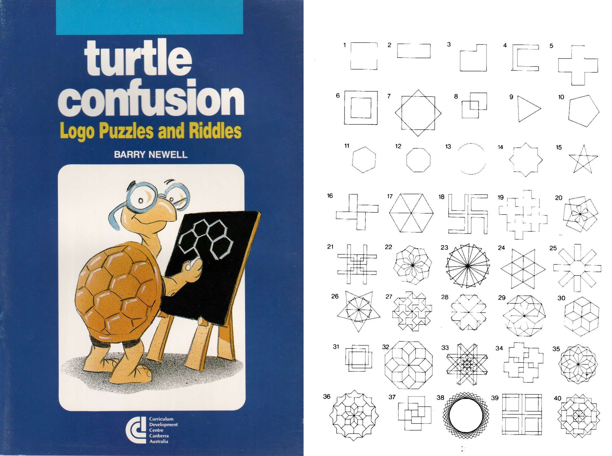
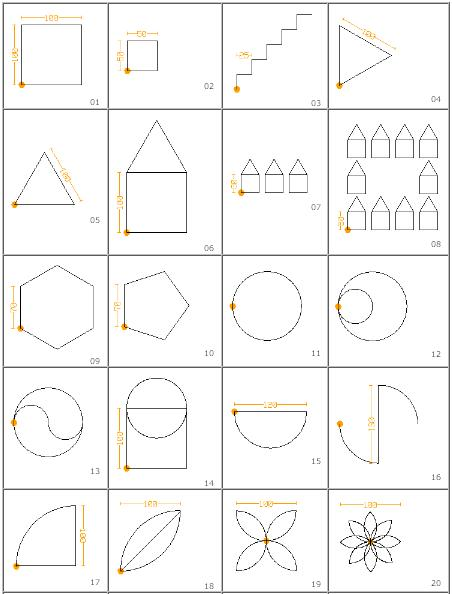
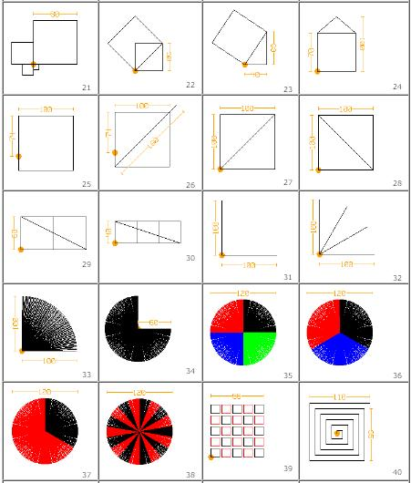
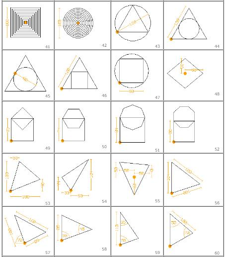
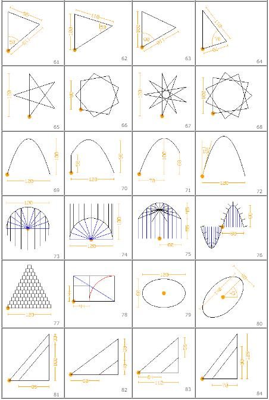

Challenges¶
Gary Stager has some introductory challenges he uses with 3rd Grade students.
Do Barry Newell’s 40 shapes challenge [1] (The Turtle Confusion puzzles have been incorporated into a new activity (See Turtle Confusion)).


Do Daniel Ajoy’s Geometry Exercises [2]




Mike Leishman’s 10 Green Bottles Competition.
The idea is that you write a program to display the words of the song “10 green bottles” [3]
Can you get the computer to sing in tune using the espeak -p option
Mike Leishman’s Guess the Number
Write a guessing game computer program. It must ask the user to guess a secret number between 1 and 100 and continue until the secret number is guessed. If the user guesses the wrong number, display a message stating that they are too high or too low such as “Bad Guess – Too High - Try again”. Make your program count the number of guesses taken. When the user guesses the correct number, display the Message “You guessed it in <number of guesses> guesses” and stop the program.
Extension: You can also provide the user with other information such as “cold”, “warm” and “hot” depending on how far out their guess is. [4]
Generating numbers
Calculate the values of pi [5] and e [6], find the prime numbers up to 1000
How many different ways can you do it?
How fast can you do it?
Pizzas
Write a program to solve: A small pizza costs 120 pesos. A large pizza costs 160 pesos. You spent 920 pesos in total. How many small and many large pizzas have you bought? [7]
Project Euler [8]
Project Euler is a series of challenging mathematical/computer programming problems that will require more than just mathematical insights to solve. Although mathematics will help you arrive at elegant and efficient methods, the use of a computer and programming skills will be required to solve most problems.
Python Challenge [9]
The Python Challenge is a set of riddles that require a little bit of Python programming to be solved. The solutions are entered by changing the address of the page (URL). You get used to the idea pretty fast after solving the first few levels.